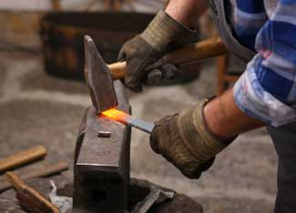

Hot, dirty and physically demanding - blacksmithing isn’t for everybody. But for those so inclined, learning this craft can be both rewarding and useful. Imagine the satisfaction of striking a glowing piece of metal with a big hammer against an anvil and reshaping it into the desired form. In fact, blacksmithing is so physical that it can be a great release for stress in these days of technology overload.
Traditionally, if you wanted to learn to be a skilled smith, you would go to work as an apprentice or helper in a local blacksmith shop. But today, you don’t need to learn all about the trade to enjoy the art of blacksmithing.
A few years ago, my teenage son, Griffin, and I enrolled in a three-day introduction to blacksmithing class at the John C. Campbell Folk Art School in Brasstown, N.C. Nestled in the rolling Southern Appalachian countryside, this school has been teaching a wide variety of folk art skills since 1925, and it makes a wonderful getaway, with comfortable lodging and family style home-cooked dining.
Our mentor for the class was full-time artist-blacksmith Paul Garrett. Garrett created a relaxed atmosphere and took into account the different skill levels of everyone in the class. By the end of the first day, even the first-timers were bending and twisting metal stock into functional hardware. The environment at the school fosters learning and creativity, and just as importantly, it provides all the necessary equipment and hardware to learn about blacksmithing.
At the heart of a blacksmith shop is the forge. Reshaping metal requires extreme heat, and that heat comes from the forge. The old-school type of forge is coal-fired. Another option is to use more modern gas forges, which are cleaner and more easily controlled. But to the traditionalist, the act of stoking and tending a coal forge is no small part of the romance. A coal forge requires constant attention from the second you light it. The firepot transforms the coal into coke, a solid carbon fuel that burns with intense heat and little smoke. The forge temperature is adjusted by the airflow from a bellows or from a hand-cranked or electric blower. A coal forge can become so hot that leaving a work piece in too long will turn it white hot and actually burn up the metal.
The blacksmith’s arsenal includes the anvil and a variety of hammers, hardys, punches, tongs and fullers, among other tools. The traditional anvil design has a large flat work surface called the face, a step used for some forming techniques and a horn used for rounding, such as crafting horseshoes. Most have a square hardy hole and a round pritchel hole. The hardy hole accepts the square shank of a hardy tool used for cutting. The pritchel hole is useful for punching, where the hot metal is pierced with a punch, eliminating the need for drilling.
It’s amazing what you can do with a solid piece of metal. With proper technique and a lot of imagination, true works of art can grow from the inferno of the forge. A piece of quarter-inch square stock, for example, can quickly be drawn down to a sharp point with angled hammer blows on the face of the anvil. Or, you can heat and twist the part like a licorice whip for a decorative effect. By the end of the three-day class, my son and I were able to produce useful household items including plant hangers, hooks, fireplace tools and door pulls. Watching a skilled smith like Paul Garrett is inspiring and feeds the desire to learn the craft. Much of the art is trial and error - blacksmithing is as much feel as knowledge.
Once you’re initiated to the craft, blacksmithing can be addictive. Back home without the proper tools, I found myself checking farm auctions and garage sales for old forges and anvils. Finally, an Internet search turned up a local blacksmith artisan less than an hour from our rural southeastern Ohio home.
As luck would have it, master smith Loren Roper also teaches classes in his rustic multiple forge shop. After an e-mail inquiring about forge time, my son and I were back in the heat of the shop, sweating and grinning, refreshing old skills and learning a few new ones. Griffin produced a beautiful three-candle centerpiece of his own design for our dining room table, and I managed a rather stout horse tie ring for our barn. Loren’s impressive work includes handcrafted knives made by forge welding old chain-saw chain onto Damascus steel, household tools, art pieces and unique jewelry items.
If you are interested in experiencing blacksmithing for yourself, the Artist-Blacksmith Association of North America is a great resource. A comprehensive list of educational resources is available on their Web site including shops and schools offering classes. You will get dirty and hot, but soon you’ll be hearing the ring of the anvil and learning a useful skill that can last a lifetime.
Do you have blacksmithing experience? Share your stories and advice by posting a comment below.
|
 ISTOCKPHOTO/BOJAN FATUR Explore the art of blacksmithing and learn how to make useful metal objects for your home and homestead. |
|
|